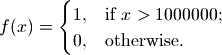
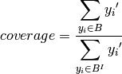
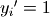
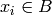
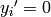
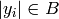
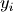

Code author: jhkwakkel <j.h.kwakkel (at) tudelft (dot) nl>
example of use
We provide here an extended example of how prim can be used. As a starting point we use the cPickle file generated and saved in the tutorial on the Flu model. We use prim to find whether there are one or more subspaces of the uncertainty space that result in a high number of deaths for the ‘no policy’ runs.
To this end, we need to make our own classify(). This function should extract from the results, those related to the deceased population and classify them into two distinct classes:

Here,  is the endstate of ‘deceased population region 1’.
is the endstate of ‘deceased population region 1’.
A second thing that needs to be done is to extract from the saved results only those results belonging to ‘no policy’. To this end, we can use logical indexing. That is, we can use boolean arrays for indexing. In our case, we can get the logical index in a straightforward way.
logicalIndex = experiments['policy'] == 'no policy'
We can now use this index to modify the loaded results to only include the experiments and results we want. The modified results can than be used as input for prim.
Together, this results in the following script:
which generates the following figures.

perform Patient Rule Induction Method (PRIM). This function performs the PRIM algorithm on the data. It uses a Python implementation of PRIM inspired by the R algorithm. Compared to the R version, the Python version is data type aware. That is, real valued, ordinal, and categorical data are treated differently. Moreover, the pasting phase of PRIM in the R algorithm is not consistent with the literature. The Python version is.
the PRIM algorithm tries to find subspaces of the input space that share some characteristic in the output space. The characteristic that the current implementation looks at is the mean of the results. Thus, the output space is 1-D, and the characteristic is assumed to be continuous.
As a work around, to deal with classes, the user can supply a classify function. This function should return a binary classification (i.e. 1 or 0). Then, the mean of the box is indicative of the concentration of cases of class 1. That is, if the specified threshold is say 0.8 and the threshold_type is 1, PRIM looks for subspaces of the input space that contains at least 80% cases of class 1.
| Parameters: |
|
|---|---|
| Returns: | a list of PRIM objects. |
for each box, the scenario discovery metrics coverage and density are also calculated:

where  if  and  otherwise.

where if and otherwise, and  is the cardinality of .
Density is the ratio of the cases of interest in a box to the total number of cases in that box. density is identical to the mean in case of a binary classification. For more detail on these metrics see Bryant and Lempert (2010)
references to relevant papers
ema application
Summary function for printing the results of prim to stdout (typically the console). This function first prints an overview of the boxes, specifying their mass and mean. Mass specifies the fraction of cases in the box, mean specifies the average of the cases.
| Parameters: |
|
|---|
if one wants to print these results to a file, the easiest way is to redirect stdout:
sys.stdout = open(file.txt, 'w')
This functions visually shows the size of a list of prim boxes. Each box is a single plot. The dump box is not shown. The size of the boxes is normalized, where 0 is the lowest sampled value for each uncertainty and 1 is the highest sampled value for each uncertainty. This is visualized using a light grey background.
| Parameters: |
|
|---|---|
| Return type: | a figure instance |
This functions visually shows the size of a list of prim boxes. Each box has its own color. The dump box is not shown. The size of the boxes is normalized, where 0 is the lowest sampled value for each uncertainty and 1 is the highest sampled value for each uncertainty. his is visualized using a light grey background.
| Parameters: |
|
|---|---|
| Return type: | a figure instance |